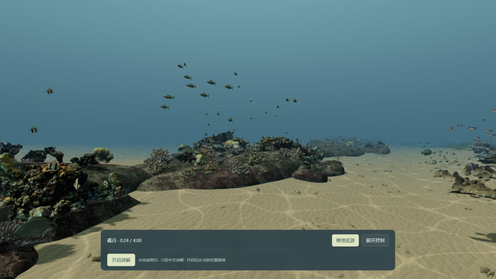
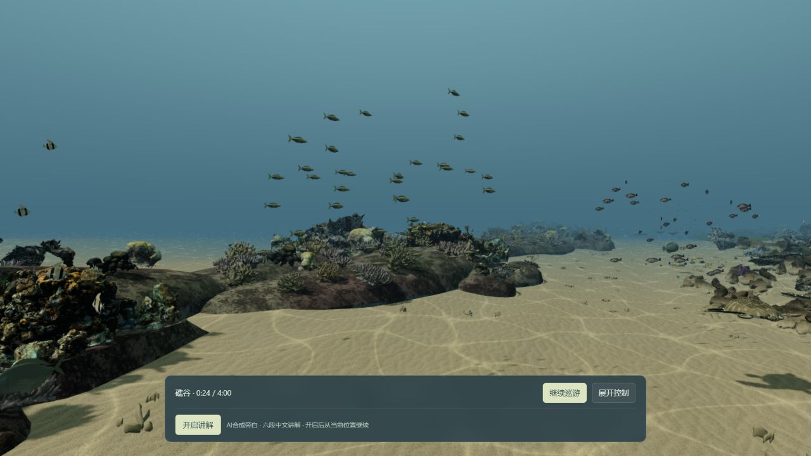
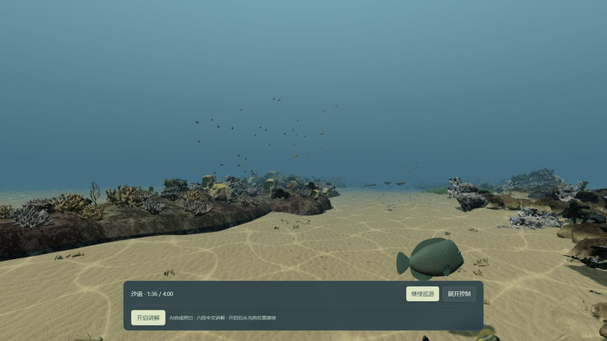
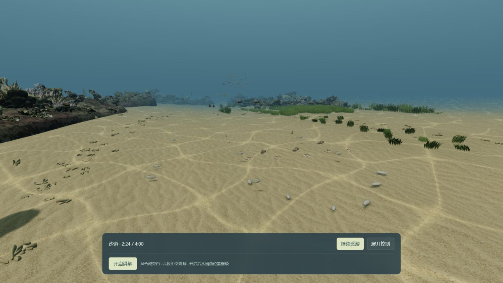
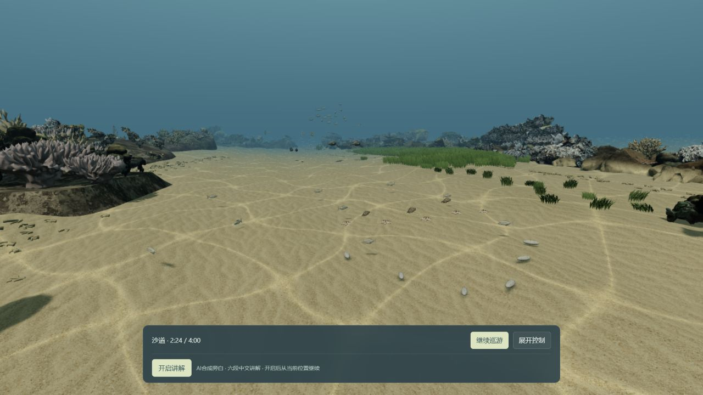
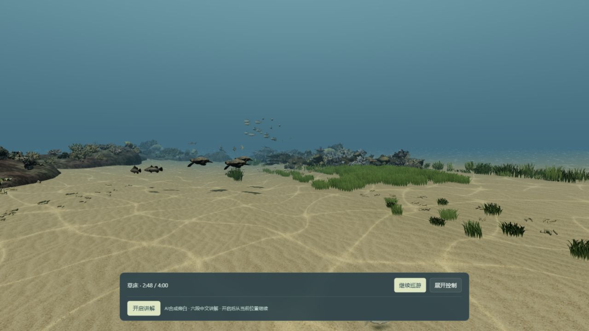
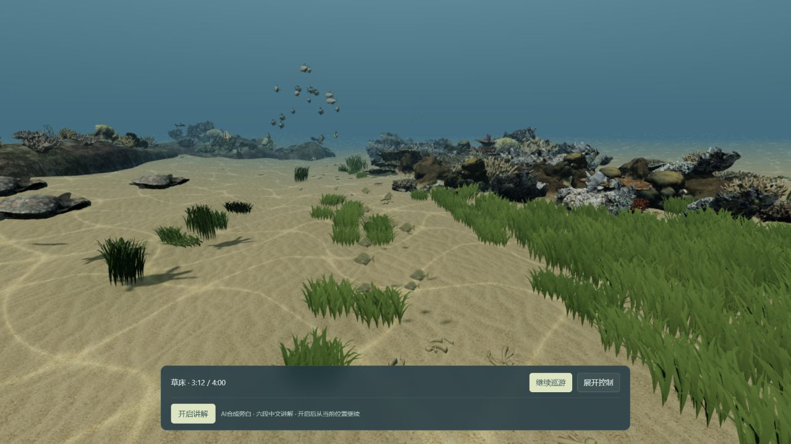
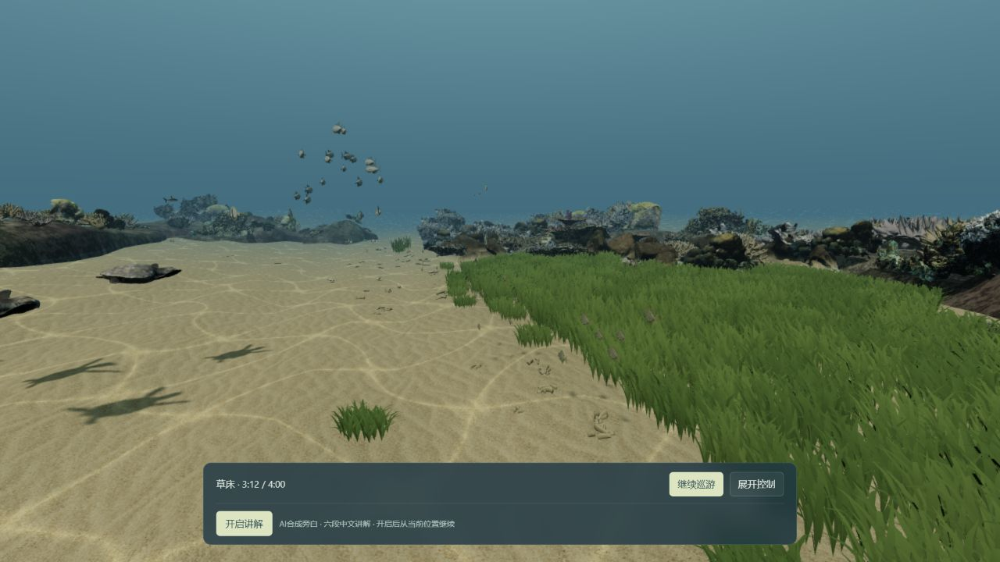

01 / 礁谷 · 0:24
鱼群沿实际礁间开口往返。开场近礁轮廓变化较小，主要保留上一版的水层层次。


沿用原4分钟路线和现有动物，将礁体、沙地和草床组织成连续的活动空间。此轮重点是整体结构与动物和环境的联系，范围止于这段浅海体验。

| 区域 | 这轮实现 | 怎样观察 |
|---|---|---|
| 礁谷 | 完整礁体与附着珊瑚、居民一起迁移，外围礁脊和开口重新组织 | 观察鱼群经过开口，再看下方礁边居民 |
| 沙道 | 保留开敞软底，碎屑与礁脚界定边缘，9只羊鱼接近并探查沙面 | 看停留、移动与探底的联系；小动物仍需要留意 |
| 草床 | 306簇重新组织为267簇核心、39簇边缘，18只兔鱼沿真实草缘活动 | 看从稀疏草缘到连续核心的变化，以及海龟和草缘鱼 |
| 两段交界 | 礁谷渐入软底；沙地渐入草缘，保留同一镜头路线 | 留意两侧环境共存和动物分布的转换 |
目前仍是可演示的海底原型。近礁扫描硬边、旧动物模型感、远景动物偏小和草叶重复依然存在；动物行为是确定性的生境编排，尚不等于完整食物网或自主生态。
种子55、同一路线时刻、同1280×720视口。动物位置和跟随取景可能不同；这是整体效果对照，不是材质升级对照。
鱼群沿实际礁间开口往返。开场近礁轮廓变化较小，主要保留上一版的水层层次。


两侧礁带收束通路，向开敞沙地过渡。远处鱼群仍偏小。


沙底保留开敞软底，边缘碎屑与礁脚组织出边界；羊鱼接近原有软底觅食点。


零散前缘进入连片草床，海龟经过沙草交界；远处水层群落保留。

草床形成连续核心、稀疏边缘和内部沙隙；兔鱼沿实际草缘停留和游动。


| 项目 | 实测结果 |
|---|---|
| 完整巡游 | 1倍速 / 240模型秒 / 240.04实秒，无暂停跳播或中断 |
| 画面流畅度 | p95 12.5ms / 最长133.3ms / 渲染比例始终1 |
| 环境 | 1280×720 / DPR约1 / RTX4070 Laptop |
| 讲解与错误 | 六段playing / 无error或blocked / 控制台error、warn为空 |
| 本地加载 | 3.949秒，已有缓存，非公网冷启动或受控性能提升 |
| 相关检查 | 32项通过 / Vite构建11.73秒 / 9运行文件实播前后一致 |
| 视觉结论 | 部分达成：连片草床清楚，开场近礁变化有限；自然程度与小动物可读性仍留作限制 |
自动检查只能验证投影、路线与支撑，不能代替人眼判断真实感。截图抽查不是全部动态互碰证明。本地缓存和本机帧间隔也不代表所有设备或公网冷启动。